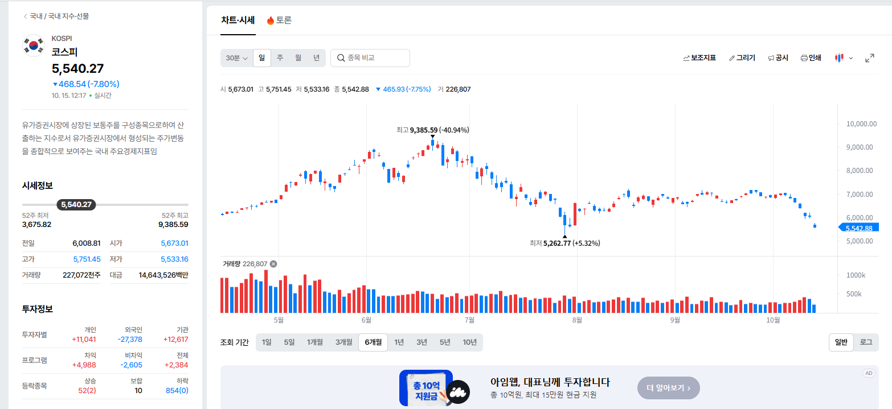
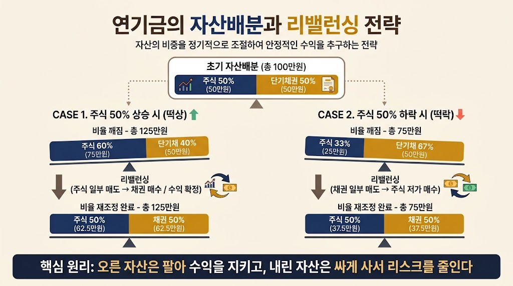
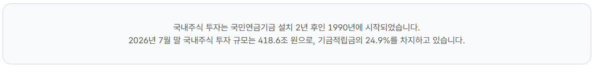
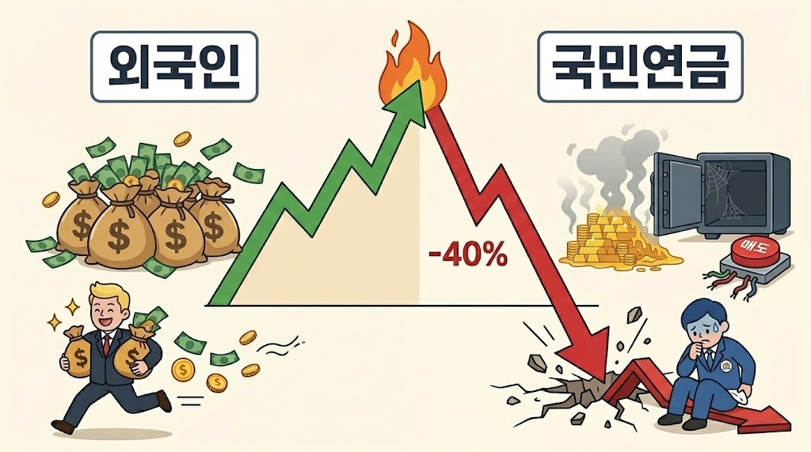

코스피 지수는 지난 6월 고점인 9300대에서 지금 4개월만에 -40%을 찍고 지옥을 가고있다
주식계좌가 하루에 마이너스가 -5~10%씩 찍히는 좆같은 상황에서 단전으로 깊이 올라오는 빡침을 참고
국민연금 개새끼 한번 해야겠다
1. 연금은 어떻게 돈을 벌어서 우리의 노후를 보장하는가?
국민연금을 비롯해서 존나 큰 돈을 굴리는 연기금의 전략은 사실 단순하다.
1) 주식시장은 길게 보면 우상향한다.
2) 근데 그 과정에서 등락이 심하기 때문에, 수익률을 일부 포기해도 리스크를 완화해야 한다.
이러한 과정을 보여주는 것이 자산배분이다.
100만원을 주식 50%(50만원), 단기채권 50%(50만원) 의 비중으로 맞추는 국민연금이 있다고 치자.
단기채권은 사실상 예금과 같다.
여기에서 주식이 만일 떡상해서 50% 올랐다면 주식 60%(75만원), 단기채 40%(50만원)이 되어 비율이 깨진다.
이걸 그대로 들고있으면 주식이 더 올랐을때 더 큰 수익을 볼 수 있지만, 만일 내린다면 수익은 사라져버린다.
그래서 국민연금이 하는게 리밸런싱. 즉 비율을 다시 재조정해서 늘어난 총자산 125만원을 다시 주식 50%, 채권 50%으로 배분한다.
그러면 주식 50%(62.5만원), 채권 50%(62.5만원)이 된다.
만일 반대로 처음 조건에서 주식이 떡락해서 50%이 내렸다면?
주식 33%(25만원), 채권 67%(50만원) 으로 비중이 깨졌으니까 이번엔 채권을 팔아서 주식을 산다.
그러면 다시 주식 50%(37.5만원), 채권 50%(37.5만원)이 된다.

* 제미나이한테 만들어달라고 한 이미지임
이 작전의 좋은점이 뭐냐?
상승장에서 주식 비중을 낮추고 채권 비중을 낮춘다 -> 자연스럽게 자산을 고점에서 매도하고 현금화해서 수익을 확정하고 리스크를 줄임
하락장에서 채권 비중을 낮추고 주식 비중을 높인다 -> 자연스럽게 자산을 저점에서 매수해서 향후 상승장에서 큰 수익을 얻을 수 있음
이는 반대로 말하면 상승장에서는 상승폭을 제한할 수 있지만, 하락장에서도 하락폭을 제한하는 안전판의 역할을 한다는 말임
근데 이번에 코스피가 불같이 오르는 장에서 저 비율을 인위적으로 조절함으로써 생기는 피해는 두 가지임
1) 상승장에서 매도를 못 했기 때문에 평가이익을 실제 이익으로 실현하지 못하고 그냥 사라져버림.
즉 국민연금이 녹음
2) 상승장에서 못 팔았기 때문에 하락장에서 매수할 돈이 없음.
그러니까 주가지수가 4개월만에 무려 40%가 녹음
그래서 결국 저 거대한 상승폭과 지금의 하락폭은 외국인이 처먹고 튄거고,
국민연금은 매도버튼 뽑고 손가락 빨다가 수익을 날린거임
2. 그래서 왜 국민연금이 욕을 처먹어야 하느냐?
1) 국민연금은 법으로 입금을 강제해놔서 그렇지, 비유하면 전국민이 넣는 펀드를 운용하는 운용역임.
이러한 운용역이 국내주식 20%, 해외주식 20%, 부동산 20% 금 20% 채권 10%로 투자할게요! 라고 공시한다면 그것은 투자자(국민)에 대한 약속이라는 말임.
여기에서 만일 국민연금이 자기들 멋대로 비트코인에 10%을 넣고 수익률 2배를 거뒀거나,
부동산에 40%의 자산배분을 한 뒤 수익을 보더라도 투자자와의 약속을 어겼으므로 징계해야함.
지금 자산배분 이슈도 유사한데, 물론 절차를 거쳤기 때문에 법적인 문제는 없지만
원래 약속했던 국내주식 투자비중을 14.9%에서 20.8%로 올리고,
기계적 매도를 하지 않고 투자 비중을 지속 가져갈 수 있는 SAA(전략적 자산배분) 비중을 3->5%으로 상향하고,
TAA(전술적 자산배분) 비중 2%를 활용해서
국내주식 투자비중을 약 27.8%정도까지 가져갈 수 있게 조정함

저게 7월이니까 코스피 지수는 대충 7500정도였고, 지금 5500이니까 27%의 하락을 추가로 더 쳐맞음.
문제는 이러한 의사결정 과정을 유례없이 신속하게, 회의록을 비공개로 돌리면서까지 억지로 진행한 것임.
자산시장에 혼란을 주지 않겠다는 명분을 댔지만, 사실 위에서 말했듯이 국민연금은 '운용역' 이고 우리 국민들이 투자자임.
국내주식 20%, 해외주식 20%, 부동산 20% 금 20% 채권 10%의 투자비중에서
운용역이 비밀 회의를 거쳐(회의록 비공개) 아무 자료도 공개하지 않고
국내주식이 떡상하니 보유비중을 높여서 매도버튼 뽑고 존버하겠습니다! 라고 결정한것임.
그 동안 평가이익만 잔뜩 늘었다가 다시 줄어들어서, 국민들의 노후자금은 말그대로 녹았음.

국민연금이 아니라 일반 투자운용사였으면 이미 금감원 가서 줄빠따맞고 누워서 울고있어야 되는 안건임.
만일 코스피가 9000이 아니라 18000까지 가서 실제 수익이 2배가 되었다고 하더라도
원칙과 매뉴얼을 저렇게 손바닥 뒤집듯 바꿔서 내린 결정은 비난받아야 마땅함.
왜 원칙과 매뉴얼을 손바닥 뒤집듯 바꿨는지? 에 대해서는 회의록이 비공개라 나는 모르지만
국민연금이 내린 최종 결정이기 때문에 욕을 처먹어야 마땅함
3. 번외
국민연금은 팔아도 욕먹고 안팔아도 욕먹는다! 라는 사람들이 있던데
국민연금이 파는건 욕먹을 행동이 절대 아님. 상승장엔 팔아서, 하락장엔 사서 변동폭을 조정하는 것 자체가 증시안정임.
다만 주식을 들고있는 사람들이 국민연금때문에 자기 주가 빠진다고 징징거리는건데
국민연금은 우리의 노후를 책임지는 돈이지 주식쟁이들 주가 부양하는 쌈짓돈이 아니라는거임
국민연금이 원칙을 지키지 못한 결과가 이렇게 처참하니.. 욕을 먹고 쳐맞아도 싸다
이런 ㅂㅅ글쓰는애들 국적이 궁금함
이 글은 다 지나고나서 4000때 부터 왜 안팔았냐고 하는 말임
논리도 병신같고 실리적으로 따져봐도 병신같은 말임